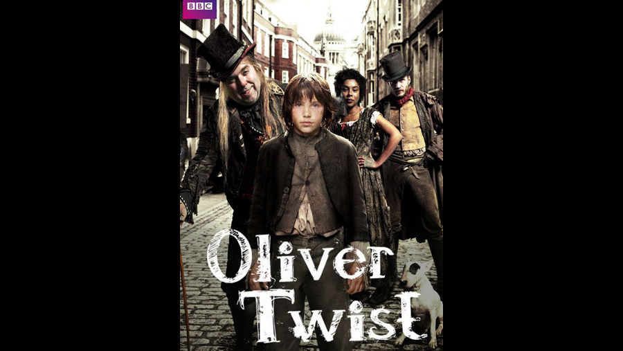

| Character | Actor |
|---|---|
| Oliver Twist | William Miller |
| Fagin | Timothy Spall |
| Bill Sikes | Tom Hardy |
| Nancy | Sophie Okonedo |
| Mr. Brownlow | Edward Fox |
| Mr. Bumble | Gregor Fisher |
| Widow Corney | Sarah Lancashire |
| Jack Dawkins, "The Artful Dodger" | Adam Arnold |
| Monks | Julian Rhind-Tutt |
| Noah Claypole | Adam Gillen |
| Mrs. Bedwin | Anna Massey |
| Rose Maylie | Morven Christie |
| Sally, midwife at Oliver's birth | Nicola Walker |
| Mr Fang, a cruel magistrate | Rob Brydon |
| Mr. Sowerberry, undertaker | John Sessions |
| Mrs. Sowerberry | Michelle Gomez |
| Charlotte | Ruby Bentall |
| Mr Limbkins | Vincent Franklin |
| Pearly | Connor Catchpole |
| Mr Slipsby | Edward Tudor-Pole |
| Spike, a member of Fagin's gang | Callum Higgins |
| Stick, a member of Fagin's gang | Reece Dos-Santos |
| Handles, a member of Fagin's gang | Niall O'Mara |
| Role | Person |
|---|---|
| Director | Coky Giedroyc |
| Screenplay | Sarah Phelps |
The adaptation makes several major alterations to the plot of the source material, which include both alterations of events as well as familial relationships.
Rose Maylie is living with Mr Brownlow, and she addresses him as "uncle", but explains that he is in fact her guardian who took her and her sister, Agnes, in when her mother died. Her sister has been missing for many years, and the search for her has been ongoing. Mr Brownlow is now a part of the overall family tree, since Edward Monks is made his grandchild. As in the book, Monks becomes aware that Oliver is his half-brother, born to the missing Agnes who had a relationship with his father, and seeks to end his life so that there is no competition to his inheritance. As a result, Oliver is ultimately revealed to be Mr Brownlow's grandchild, in addition to being Rose's nephew and Monks' half-brother, as in the novel. Unlike the book, however, Monks is not an unattractive, nervous and cowardly epileptic, but a scheming, manipulative and attractive cad seeking engagement to Rose, who clearly doesn't like him.
When a gun was pointed at Sikes when he attempts to rob the house, he uses Oliver as a shield from the shots, injuring him. Oliver is taken back to Fagin's lair to recover, rather than being nursed back to health in the countryside by the Maylie family, as in the novel. It is Nancy's informing Rose, and a highly skeptical Mr Brownlow, of Oliver's whereabouts that results in her demise at the hands of Sikes. Her ghost continues to haunt him when he returns to London with Oliver, resulting in him choosing to hang himself in the sewers as a means of escaping the London crowds who chase him.
Meanwhile, Monks' murderous motive is discovered by Mr Brownlow and Rose; he is disowned and sent to the West Indies and Oliver, escaping the clutches of the crazed Sikes, returns to the Brownlow household, and is welcomed. It is the Artful Dodger, rather than Oliver, who visits the condemned Fagin in prison, and goes to his public execution. Sikes' dog finds Dodger and the two disappear into the crowds together. Fagin has genuine concern for Oliver in this version.